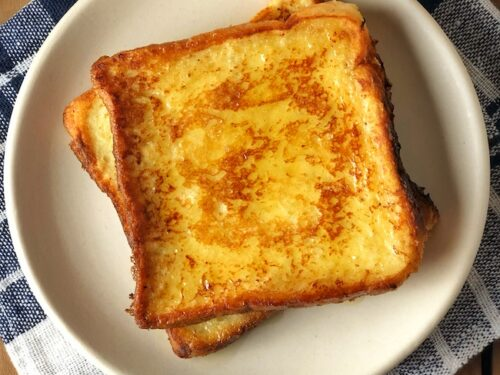

French Toast

How to Make French Toast
It's easier than you think to make restaurant-quality French toast in the comfort of your own kitchen – you just need a skillet, a few staple ingredients, and a good recipe. That's where we come in!
Ingredients
- ⅔ cup milk
- 2 large eggs
- 1 teaspoon vanilla extract (Optional)
- ¼ teaspoon ground cinnamon (Optional)
- 6 thick slices bread
- Salt
- Butter
Directions
- Whisk milk, eggs, vanilla, cinnamon, and salt together in a shallow bowl.
- Lightly butter a griddle and heat over medium-high heat.
- Dunk bread in the egg mixture, soaking both sides. Transfer to the hot skillet and cook until golden, 3 to 4 minutes per side. Serve hot.